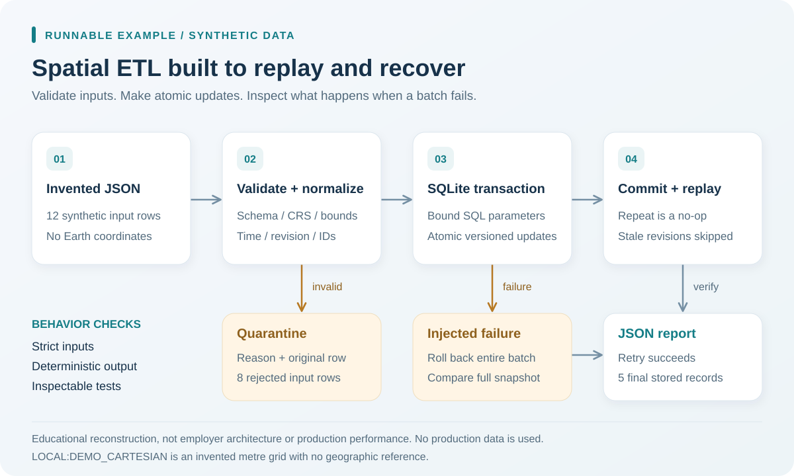

Synthetic, reproducible example
Try a small data pipeline
See how sample records are checked, loaded, and updated, including what happens when a load fails.
Educational reconstruction using invented records on a local Cartesian grid. No client data, Earth coordinates, or production performance claims.
Run it locally
Python 3.10 or newer. Standard library only; no accounts, credentials, or external datasets. From the repository root:
python examples/spatial-etl/demo.py
python -m unittest discover -s examples/spatial-etl -p test_demo.py -vRecorded demonstration results
These are outputs of the included teaching example, not measurements of a client system or field accuracy.
- Synthetic input rows
- 12
- Accepted initial rows
- 4
- Quarantined input rows
- 8
- Records after recovery
- 5
- Rollback state check
- Passed
{kind=link}

| Batch | Inserted | Updated | Unchanged | Stale skipped |
|---|---|---|---|---|
| Initial load | 4 | 0 | 0 | 0 |
| Identical replay | 0 | 0 | 4 | 0 |
| Recovery retry | 1 | 2 | 0 | 0 |
| Recovered replay | 0 | 0 | 3 | 0 |
| Older source replay | 0 | 0 | 2 | 2 |
| Input row | Synthetic ID | Reason |
|---|---|---|
| 5 | SYN-005 | crs must be LOCAL:DEMO_CARTESIAN |
| 6 | SYN-006 | x must be a finite number in [0, 10000] metres |
| 7 | SYN-007 | schema mismatch: missing=['condition'], extra=[] |
| 8 | SYN-008 | inspected_at contains an invalid calendar date or time |
| 9 | SYN-009 | revision must be a positive SQLite-sized integer |
| 10 | SYN-010 | y must be a finite number in [0, 10000] metres |
| 11 | SYN-011 | duplicate id in batch; all occurrences quarantined |
| 12 | SYN-011 | duplicate id in batch; all occurrences quarantined |
| Synthetic ID | X (m) | Y (m) | Condition | Revision |
|---|---|---|---|---|
| SYN-001 | 1000 | 1200 | attention | 2 |
| SYN-002 | 1820 | 1400 | clear | 2 |
| SYN-003 | 4500 | 2100 | attention | 1 |
| SYN-004 | 7900 | 8300 | clear | 1 |
| SYN-012 | 5000 | 5100 | attention | 1 |
Interpretation and limitations
- CRS is LOCAL:DEMO_CARTESIAN: arbitrary origin, x right/east, y up/north, metres, valid extent 0 to 10000 on each axis. It has no Earth reference and cannot be overlaid on a real map.
- A deliberate failure after two updates left every stored value identical to the pre-load snapshot. A subsequent retry committed two updates and one insertion.
- Repeated batches perform no writes when payload and revision match. Older revisions are skipped. Conflicting equal revisions or reversed inspection dates abort the complete transaction.
- Quarantine retains each rejected input and its reason. Both occurrences of a duplicated ID are rejected; source ordering never chooses a winner.
- SQLite is used for a portable transaction demonstration, not presented as PostGIS, a spatial index, a production job scheduler, or a performance benchmark.